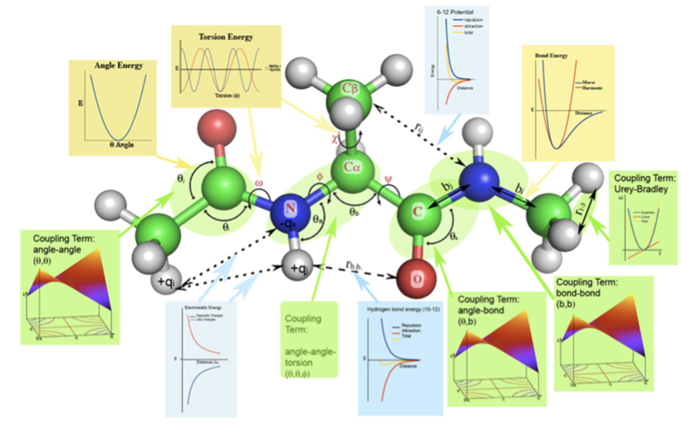
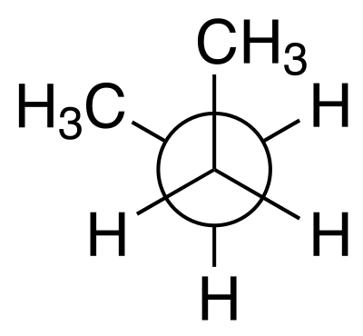
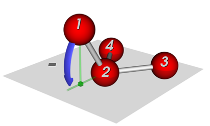

Introduction#
Bond lengths and angles#
The geometry of a molecule in terms of bonds, angles, etc. is straightforward; however, there a few definitions that need to be clear. We will be talking mostly about valence terms, which is how chemists think about molecules, and is also the basis of valence forcefields. Here is a nice picture from a review of biomolecular forcefields [1] that covers the geometry of a molecule and the types of terms in forcefields:

Overview of molecular geometry#
We’ll ignore the forcefield graphs and concentrate on the picture of the dialanine molecule. To the right a couple of bonds are indicate with arrows and bi and bj. Several angles are indicated with θ, and a number of dihedral angles, which are often called torsions, are indicated with χ, ω, Φ, and Ψ following the conventions for peptides and proteins.
Dihedral angles#
The conventional definition <https://en.wikipedia.org/wiki/Dihedral_angle#In_stereochemistry> of dihedral angles involves looking down the central bond in a Newman projection <https://en.wikipedia.org/wiki/Newman_projection>:

Newman projection of gauche- butane (G-)#
The 0º angle is defined as the front and back groups in the figure eclipsing each other, e.g the back -CH3 in the butane example being directly behind the front -CH3 group. If the back group is rotated clockwise, the angle is positive; counterclockwise, negative. In the picture above, the angle is -60º. When the two groups are trans the angle is 180º, giving the range for the angle of (-180, 180].
Note that another convention is reasonably common, where the angle of the trans configuration is 0º and eclipsed, 180º. You may also come across the range [0, 360)!
A final comment about dihedral angles. We tend to think of one dihedral angle about a bond, and indeed the biopolymer convention reproduces that idea. However, outside certain classes of molecules it is not obvious how to systematically come up with the dihedral angle. Normally we just list all of them, which is what Geometry Analysis does. So for ethane there are 9 dihedral angles and for ethylene, 4.
Out-of-plane angles#
The out-of-plane angle is not shown in the figure at the top of the page, but is needed to describe the non-planarity of ammonia or a substituted benzene ring. This plug-in uses the Wilson definition of the out-of-plane angle:

Wilson out-of-plane angle#
There are actually 3 different out-of-plane angles, that of each atom with plane defined by the central atom and the other two atoms. The situation is not the same as with the dihedral angles, so conventionally the three angles are averaged to produce a single out-of-plane angle. That is what Geometry Analysis does. Also, by convention the second atom is listed second, so the out-of-plane angle in ammonia would be written as H-N-H-H. This module tends to write it as H-N(-H)-H using a pseudo-SMILES format to emphasize that the N is the central atom.
There are other definitions that you might encounter. Sometimes the height of the central atom above the plane defined by the three peripheral atoms is used. It is also common to consider the out-of-plane angle to be an “improper torsion” since the four atoms form a dihedral angle if we ignore the real bonds. Thus in H-N-H-H the first two bonds are actual bonds, but the last, H-H, is not a real bond
That covers the definition uses in this module, and notes some of the other conventions that you may come across.